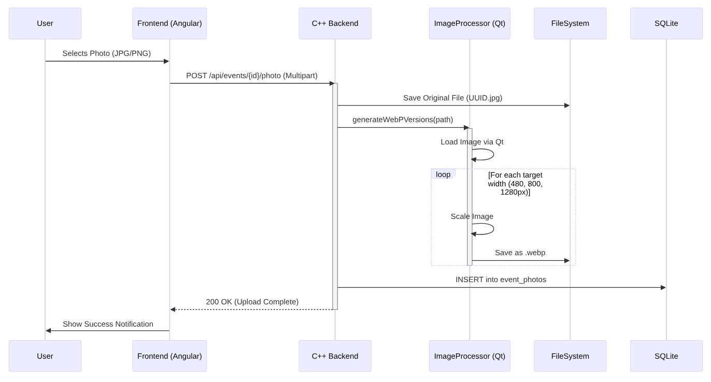

🏗️ CakePlanner Architecture
This document provides a high-level overview of the CakePlanner architecture, covering the system design, domain boundaries, and key technical workflows.
1. System Context (The Big Picture)
CakePlanner is designed as a monolithic application that serves baking groups (companies, clubs, friends) to organize events. It acts as the central hub for planning, rating, and sharing photos.

2. Container Architecture
The system consists of a modern Single Page Application (SPA) frontend and a high-performance C++ backend.
| Component | Technology | Description |
|---|---|---|
| Frontend | Angular 21+ | Material Design, Signals, Transloco (i18n). Responsive UI for Desktop & Mobile. |
| Backend | C++23 (Crow) | REST API, Business Logic, Image Processing. |
| Database | SQLite3 | Zero-configuration SQL engine. Stores users, events, and ratings. |
| Media Engine | Qt6 | Server-side image processing (scaling & WebP conversion). |
3. Domain Design (Bounded Contexts)
To keep the logic organized, the application is conceptually divided into distinct Bounded Contexts. Each context handles a specific part of the business domain.

🔎 Context Descriptions
-
Identity & Access: Handles user registration, login, and group assignments. Ensures that only group members can see their events.
-
Planning: The core calendar logic. Manages dates, baker assignments, and prevents scheduling conflicts.
-
Engagement: Contains the logic for the "Hall of Fame". It calculates average ratings and sorts events by popularity.
-
Media: A specialized technical context responsible for handling file uploads, generating thumbnails, and optimizing images for the web (WebP).
-
Administration: Provides tools for system maintainers to manage users, reset passwords, configure global settings, and view system logs.
4. Key Workflows
📸 Image Upload & Optimization Pipeline
One of the key technical features is the automatic optimization of user uploads to ensure fast loading times in the "Hall of Fame".
5. Database Schema (Simplified)
The database is normalized to ensure data integrity.
- users: Stores credentials and profile data.
- groups: Manages baking circles.
- group_members: Links users to groups (n:m).
- events: The core entity (Date, Baker, Description).
- ratings: Links users to events with a score (1-5).
- event_photos: Stores paths to community uploads linked to events.